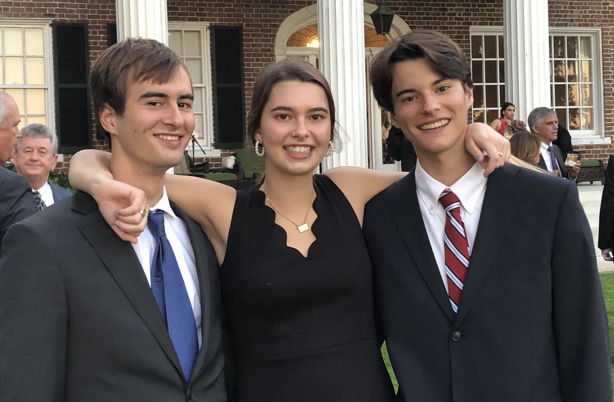

Contact
Email: BodinFarace@yahoo.com
Bodin was born on December 27th, 2002 in Baltimore, Maryland. He has an older brother named Wyatt and an older sister named Campbell. At the age of 3, Bodin's family moved from Maryland to Huntsville, Alabama. Bodin lived in Huntsville from preschool to first grade. After first grade, his family moved again to Montgomery, Alabama. Bodin and his siblings loved living in Montgomery but after 6th grade, his family moved again to Jacksonville, Florida. Bodin and his siblings grew to love Flordia. They loved being close to the beach and the year-round warm weather. Bodin and his family lived in Flordia for 3 years before moving back to Baltimore, Maryland. Bodin and his siblings got their high school diplomas from their father's alma mater. Bodin is now a student at Elon University and is getting a degree in communications.
Contact
Email: BodinFarace@yahoo.com